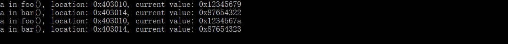
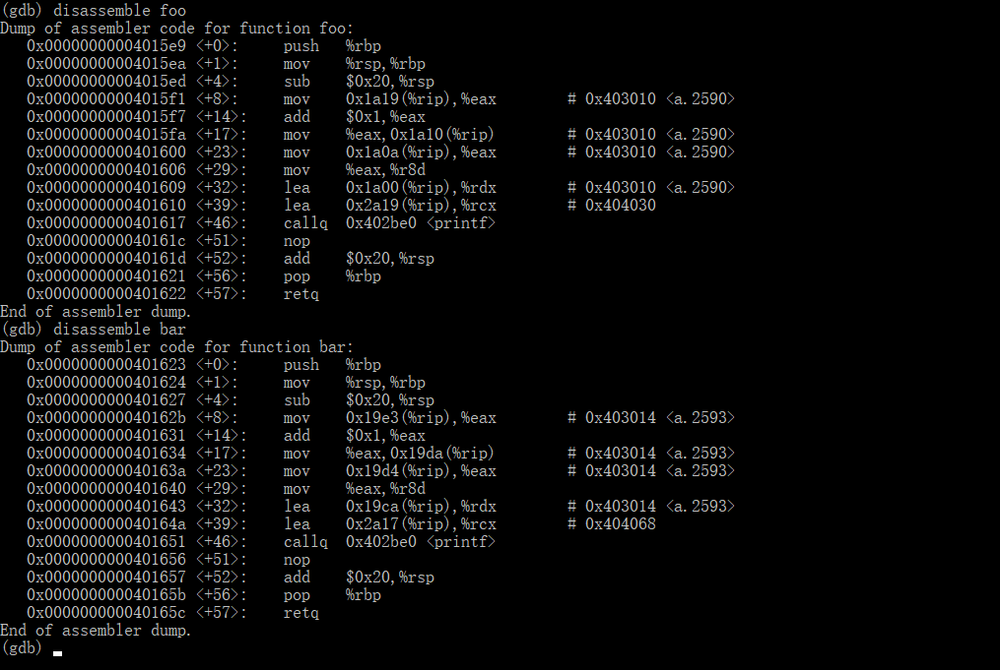
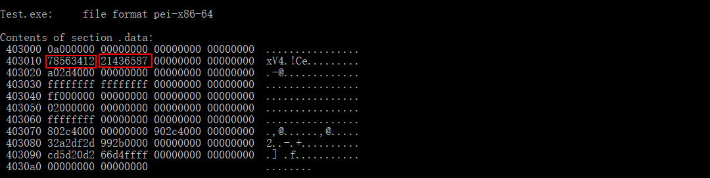

C语言中static关键字的作用
static修饰局部变量
首先来看一段程序，思考一下该程序调用foo、bar函数后输出a的值分别会是多少呢？
#include <stdio.h>
int main(){
foo();
bar();
foo();
bar();
return 0;
}
void foo() {
static int a = 0x12345678;
++a;
printf("a in foo(), location: 0x%x, current value: 0x%x\n", &a, a);
}
void bar() {
static int a = 0x87654321;
++a;
printf("a in bar(), location: 0x%x, current value: 0x%x\n", &a, a);
}
使用gcc编译上面的程序，运行程序，控制台输出如下图 
从程序的输出我们可以看到foo和bar中的a的存储地址不同，而且每次调用foo和bar，它们自己的变量a的值都增加了1。再来看一下它们的反汇编代码

可以看到a并不在栈上。使用objdump -h Test.exe获得各个段的信息。可以看到.data段将被加载到0000000000403000处，它和打印出来的变量a的存储地址很接近。猜测变量a可能就在.data段。
Test.exe: file format pei-x86-64
Sections:
Idx Name Size VMA LMA File off Algn
0 .text 00001db8 0000000000401000 0000000000401000 00000600 2**4
CONTENTS, ALLOC, LOAD, READONLY, CODE, DATA
1 .data 000000a8 0000000000403000 0000000000403000 00002400 2**4
CONTENTS, ALLOC, LOAD, DATA
2 .rdata 00000830 0000000000404000 0000000000404000 00002600 2**4
CONTENTS, ALLOC, LOAD, READONLY, DATA
3 .pdata 00000288 0000000000405000 0000000000405000 00003000 2**2
CONTENTS, ALLOC, LOAD, READONLY, DATA
4 .xdata 0000023c 0000000000406000 0000000000406000 00003400 2**2
CONTENTS, ALLOC, LOAD, READONLY, DATA
5 .bss 00000a50 0000000000407000 0000000000407000 00000000 2**6
ALLOC
6 .idata 00000818 0000000000408000 0000000000408000 00003800 2**2
CONTENTS, ALLOC, LOAD, DATA
7 .CRT 00000068 0000000000409000 0000000000409000 00004200 2**3
CONTENTS, ALLOC, LOAD, DATA
8 .tls 00000068 000000000040a000 000000000040a000 00004400 2**5
CONTENTS, ALLOC, LOAD, DATA
9 .debug_aranges 00000450 000000000040b000 000000000040b000 00004600 2**4
CONTENTS, READONLY, DEBUGGING
10 .debug_info 0000c127 000000000040c000 000000000040c000 00004c00 2**0
CONTENTS, READONLY, DEBUGGING
11 .debug_abbrev 00001b04 0000000000419000 0000000000419000 00010e00 2**0
CONTENTS, READONLY, DEBUGGING
12 .debug_line 00001864 000000000041b000 000000000041b000 00012a00 2**0
CONTENTS, READONLY, DEBUGGING
13 .debug_frame 00000ba8 000000000041d000 000000000041d000 00014400 2**3
CONTENTS, READONLY, DEBUGGING
14 .debug_str 00000300 000000000041e000 000000000041e000 00015000 2**0
CONTENTS, READONLY, DEBUGGING
15 .debug_loc 00002c70 000000000041f000 000000000041f000 00015400 2**0
CONTENTS, READONLY, DEBUGGING
16 .debug_ranges 00000520 0000000000422000 0000000000422000 00018200 2**0
CONTENTS, READONLY, DEBUGGING
接下来确认变量a是不是在.data段。
使用命令objdump -s -j .data Test.exe查看.data段的内容，可以看到如下的输出

果然在403010这一行看到了foo和bar两个函数里的a的两个初始值，说明本例中的static局部变量存储在.data段。
至此我们可以看出，当static修饰局部变量时，这个变量将会存储于静态数据区。且这个变量的作用域没有发生变化，仍然限于函数（模块）内部。
static修饰函数
测试代码mod1.c和mod2.c如下
mod1.c
static int foo() {
return 1;
}
mod2.c
#include <stdio.h>
extern int foo();
int main() {
printf(foo());
return 0;
}
输入gcc mod1.c mod2.c 命令，控制台输出如下：
mod2.c:(.text+0xe): undefined reference to `foo’
collect2.exe: error: ld returned 1 exit status
这表明gcc在链接的时候找不到符号foo，因为mod1.c中的foo函数在mod2.c中不可见。
接下来修改mod2.c
#include <stdio.h>
static int foo() {
return 2;
}
int main() {
printf(foo());
return 0;
}
再次编译链接，没有出现错误。运行程序，控制台输出了2；也就是说mod2.c中调用的foo()位于mod2.c而非mod1.c。
以上现象表明，在C语言中，函数默认是全局的，static修饰函数时会使该函数的作用域被限制在了定义该变量的源文件内。
static修饰全局变量
其效果和修饰函数时相同，不再赘述。
总结
- static修饰局部变量会使该变量存储于静态数据区。
- 没有使用static修饰的全局变量或函数在所有模块都可见，而使用static修饰的全局变量或函数只在当前模块可见（只在定义该变量或函数的源文件内有效）。static改变了全局变量或函数默认的作用域。
- 原文作者：KK
- 原文链接：https://kkua.github.io/post/static-keyword-in-c-language/
- 版权声明：本作品采用知识共享 署名-非商业性使用-禁止演绎 4.0 国际许可协议进行许可，非商业转载请注明出处（作者，原文链接），商业转载请联系作者获得授权。